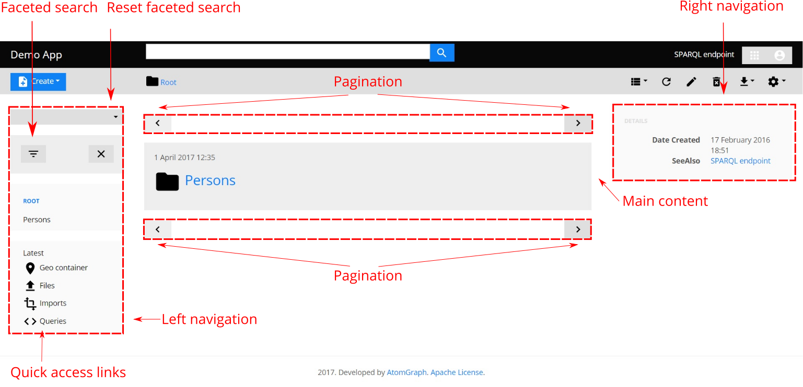
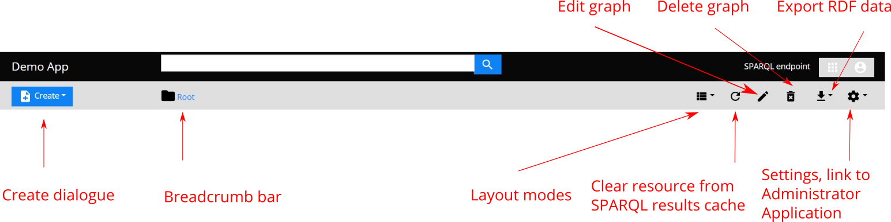

User interface
This guide walks through the main features of LinkedDataHub user interface. See the Data model guide for definitions of LinkedDataHub components such documents, content blocks, and resources.
User interface is only one of the interfaces LinkedDataHub provides. The other one is the Command line interface, which supports most of the UI actions.
The UI layout can be customized and extended using stylesheets.
Note that user interface features are subject to access control. For example, the search box will not be visible if the user is not authorized to access the search container.

Navigation bar

The application title or logo in the top-left always links to the root container of the current application.
Search box lets users search for resources within the current application that have the specified keyword in their titles, descriptions etc. Results are shown in a dropdown list.
Application's SPARQL endpoint is accessible on the right. It offers a query editor and a result view. Learn more about query possibilities in the Query data section.
Due to current web browser limitations, it is not possible to logout using client certificate authentication. As a workaround, you can close the browser, and click Cancel when asked to select a certificate the next time.
Action bar

The Create button opens a dialog through which documents can be created.
The path leading from the current document up the parent/child hierarchy to the root container is shown in the breadcrumb bar, where the current document is always the last breadcrumb. The user can always open any of the ascendant containers by clicking breadcrumbs left from the current one. The icon shows the type of the current document (container or item). A label is displayed when the URL currently being browsed is external.
Further to the right, the action bar displays buttons for performing actions on the current document.
Last but not least, the settings button provides a link to the administration application.
Only administration users have access to the administration application.
Document tree
Document tree shows the document hierarchy of the dataspace. By clicking on a container, it expands to show its children.
In a desktop layout mode, the document tree folds out when the mouse is moved to the left edge of the screen. In a responsive layout, it is always shown.
The document tree also provides shortcuts to system containers:
- Latest
- A container with the latest resources in the application's dataset by creation/modification date
- Files
- A container for file uploads
- Imports
- A container for data imports
- Queries
- A container for end-user SPARQL queries (including vocabulary mappings)
- Geo
- A container with all resources in the application's dataset that have geographic coordinates
- Charts
- A container with charts that visualize SPARQL query results
Layout modes
The active document layout mode is displayed, and can be changed using, the nav tabs at the top of the page.
Currently supported document layout modes:
- Content
- List of content blocks. Shown only if the current document has items in its content list or there is a content template defined for its type.
- Properties
- The most detailed view showing every property/value of every resource in the current document.
- Map
- Shows an interacitve map with all resources in the current document that have geo coordinates
- Chart
- Renders the metadata of the resources in the current document as a chart with (multiple chart types are supported, such as table, scatter chart, timeline etc.)
- Graph
- Renders resources in the current document graphically as nodes in a network using force-directed layout.